🎯 Learning Objectives
By the end of this lesson, you will be able to:
- Understand armature systems and bone hierarchies
- Pose characters using Pose Mode
- Apply animation principles to character motion
- Create believable character poses with weight and balance
- Animate a simple character action (wave, jump)
- Build a basic walk cycle from first principles
- Use layers and keying sets for efficient workflow
- Troubleshoot common character animation problems
📋 What You'll Learn
- Time Required: 90-120 minutes
- Difficulty: Intermediate
- Prerequisites: Lessons 24-26 (Animation Fundamentals, Timeline, Graph Editor)
- Project: Animated character performing wave and simple walk
In This Lesson
🎬 Introduction to Character Animation
Character animation is where technical skill meets performance art. You're no longer just moving objects—you're creating acting, emotion, personality. Every principle you've learned applies, but now with the complexity and reward of bringing life to characters.
What Makes Character Animation Different
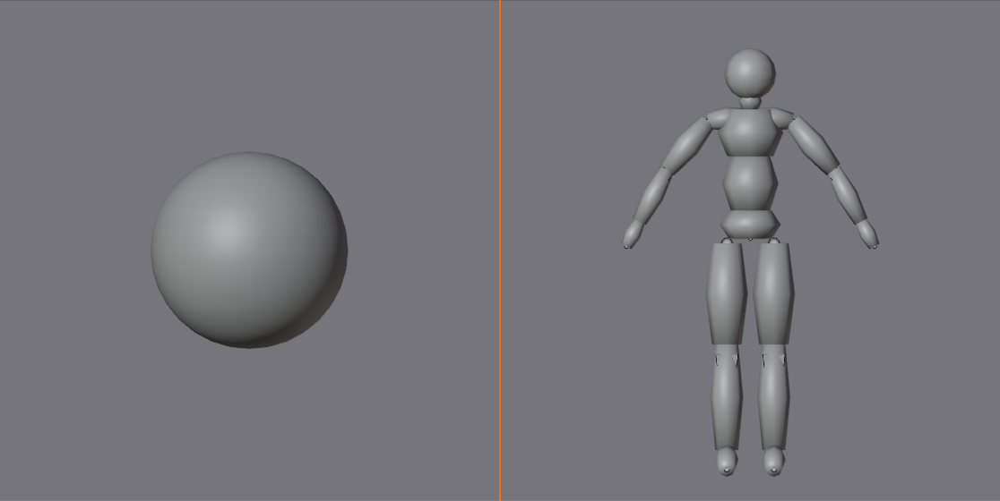
🎭 From Objects to Actors
Object animation vs character animation:
- Object animation: Single transform (location, rotation, scale)
- Character animation: Dozens of transforms working together
- Ball has 1 pivot point, character has 20+ bones
- Ball bounces, character performs
The complexity factor:
- Bouncing ball: 6-8 keyframes, 1-2 properties
- Character walk: 40+ keyframes across 20+ bones
- Character acting: Hundreds of keyframes, subtle nuances
- Don't be intimidated—same principles, just more parts
The reward:
- Creating believable performance is incredibly satisfying
- Characters connect with viewers emotionally
- Most sought-after animation skill professionally
- Foundation for games, films, VR, motion graphics
Why start now:
- You have all the prerequisite skills (principles, keyframes, curves)
- Character animation reinforces everything you've learned
- Starting simple builds confidence
- Every animator starts exactly where you are
Animation Principles in Character Work
📚 Applying What You Know
The 12 principles from Lesson 24—all apply:
- Squash and stretch: Torso compresses and extends
- Anticipation: Character winds up before jumping
- Follow-through: Hair, clothing continue after body stops
- Overlapping action: Arms, legs move at different times
- Arcs: Hands follow curved paths, not straight lines
- Timing: Different body parts move at different speeds
Additional character-specific considerations:
- Weight and balance: Center of gravity must feel stable
- Personality: Same walk, different timing = different character
- Anatomy: Joints bend in specific ways (elbows don't bend backward)
- Acting: Poses communicate emotion and intention
The pose-to-pose workflow (still applies):
- Block: Key poses (contact, down, passing, up)
- Breakdowns: Add in-between poses
- Refine: Adjust timing in Graph Editor
- Polish: Add overlapping action, follow-through
Character Animation Workflow
🔄 Professional Process
The animation pipeline:
Phase 1: Reference and planning
- Video reference (record yourself performing action)
- Thumbnail poses (quick sketches of key poses)
- Plan timing (how many frames per action)
- Study anatomy and motion
Phase 2: Blocking (key poses)
- Create major poses at key frames
- Start/middle/end poses (extremes)
- Don't worry about perfection—get ideas down
- Set keyframes on all necessary bones
Phase 3: Timing adjustment
- Move keyframes until timing feels right
- Play animation repeatedly, iterate
- Don't add detail yet—focus on rhythm
Phase 4: Refinement (breakdowns)
- Add in-between poses where needed
- Ensure arcs are smooth
- Check Graph Editor curves
- Add weight and personality
Phase 5: Polish (details)
- Overlapping action (fingers, hair)
- Follow-through on loose parts
- Facial animation (if applicable)
- Final curve refinement
What You'll Need
🧰 Tools and Assets
For this lesson:
- A rigged character: Pre-made rig (we'll provide simple one)
- Don't need to rig yet: Rigging is advanced (covered later)
- Focus on animation, not technical setup
- Many free rigs available online (Blender Cloud, Mixamo, etc.)
Simple character rig for learning:
- We'll use basic humanoid stick figure or simple character
- Has all essential bones: spine, head, arms, legs
- IK (Inverse Kinematics) for hands and feet
- Simple enough to learn on, complex enough to be useful
What we'll animate:
- Simple action: Wave, jump, or reach
- Walk cycle: The fundamental character animation
- Both teach core skills applicable to all character work
💡 Character Animation is Acting: You're not a technician moving bones around. You're a performer using a puppet. Every pose choice is an acting choice. Is the character confident or timid? That changes how they stand. Happy or sad? That changes how they walk. The technical skills—keyframes, curves, bone rotation—those are just your tools. The art is in the performance. Remember: You're directing actors who happen to be digital. Think like an actor, work like an animator.
🦴 Understanding Armatures and Bones
Before animating, you need to understand the puppet's structure. Armatures are the skeleton that drives character deformation. Let's demystify how they work.
What is an Armature?
🎪 The Digital Skeleton
Armature definition:
- Armature = collection of bones forming a skeleton
- Bones = individual control points (not actual bones—just controllers)
- Mesh = character geometry (skin) that deforms
- Armature controls mesh through skinning/weight painting
The puppet metaphor:
- Armature = puppet strings and control bars
- Bones = attachment points for strings
- Mesh = puppet fabric/body
- Animator = puppeteer pulling strings
How it works:
- You rotate/move bones in Pose Mode
- Bones deform mesh vertices based on weights
- Character appears to move naturally
- Similar to stop-motion armature inside clay puppet
Why armatures matter:
- Can't animate character without rig (technically could, but impractical)
- Good rig makes animation easy, bad rig makes it impossible
- Understanding rigs helps you animate better
- Later lessons cover creating rigs—for now, use existing ones
Bone Hierarchy and Parenting
🌳 Family Tree Structure
Parent-child relationships:
- Bones form hierarchical tree (like folder structure)
- Parent bone = controls children
- Child bone = follows parent but has own movement
- Example: Shoulder → Upper arm → Forearm → Hand → Fingers
How parenting affects animation:
- Rotating shoulder moves entire arm
- Rotating forearm moves hand but not upper arm
- Hand follows arm automatically (don't need to keyframe separately)
- But hand can also move independently from arm
Typical humanoid hierarchy:
Root (Hips)
├─ Spine
│ ├─ Chest
│ │ ├─ Neck
│ │ │ └─ Head
│ │ ├─ Left Shoulder
│ │ │ └─ Left Upper Arm
│ │ │ └─ Left Forearm
│ │ │ └─ Left Hand
│ │ └─ Right Shoulder
│ │ └─ Right Upper Arm
│ │ └─ Right Forearm
│ │ └─ Right Hand
├─ Left Thigh
│ └─ Left Shin
│ └─ Left Foot
└─ Right Thigh
└─ Right Shin
└─ Right Foot
Forward Kinematics (FK):
- Default bone behavior
- Rotate parent, children follow
- Shoulder → arm → hand chain
- Natural, intuitive for most body parts
Inverse Kinematics (IK):
- Move child, parents calculate automatically
- Move hand, arm bends to reach
- Essential for feet (ground contact) and hands (reaching objects)
- More on IK shortly
Bone Anatomy in Blender
🔍 Understanding Bone Components
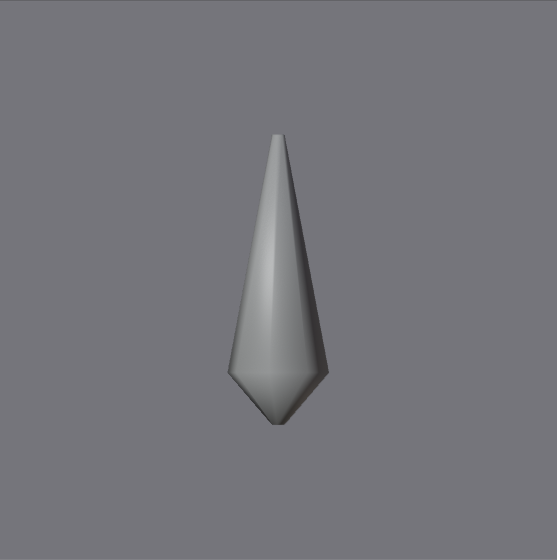
Each bone has:
- Root (base): Start point (usually toward body center)
- Tip (head): End point (usually toward extremity)
- Body: The connecting segment
- Envelope/influence: How much it affects mesh (invisible)
Bone visualization:
- Octahedral shape (8-sided diamond) by default
- Or stick/B-bone depending on display settings
- Can customize appearance per bone
- Shape is just for visualization—doesn't affect animation
Bone vs mesh relationship:
- Bones don't have to align perfectly with mesh
- Bone for arm might be shorter than actual arm geometry
- What matters is deformation influence, not visual alignment
- Good rigs have bones positioned for animator convenience
Control bones vs deform bones:
- Deform bones: Actually deform mesh (real skeleton)
- Control bones: Drive deform bones, don't deform mesh (puppeteering)
- Example: IK hand control is control bone, doesn't deform
- As animator, you mostly interact with control bones
IK vs FK (Deeper Understanding)
🎮 Two Control Methods
Forward Kinematics (FK) - Traditional:
- How it works: Rotate each bone individually
- Process: Shoulder → elbow → wrist → hand
- Result: Full control, but time-consuming
- Best for: Torso, head, dangling arms
- Advantage: Precise control over every joint
- Disadvantage: Hard to reach specific point (like ground)
Inverse Kinematics (IK) - Goal-based:
- How it works: Move target, computer calculates joint angles
- Process: Move hand controller → arm bends automatically
- Result: Fast, intuitive
- Best for: Feet (ground contact), hands (reaching objects)
- Advantage: Easy to place exactly where needed
- Disadvantage: Less control over middle joints
When to use each:
- Legs: Almost always IK (foot must contact ground)
- Arms: IK when reaching/holding, FK when gesturing/dangling
- Spine: Usually FK (direct rotation control)
- Head: FK (rotate neck/head directly)
IK/FK switching:
- Professional rigs often allow switching mid-animation
- Arm starts FK (waving), switches to IK (grabs object)
- Advanced technique—not needed for basics
Reading a Rig
🗺️ Understanding Your Character
When you open a rigged character:
- Select armature: Click any bone in viewport
- Enter Pose Mode:
Ctrl+Tabor mode dropdown - Explore controls:
- What bones can you select?
- Which are large/obvious (main controls)?
- Which are small/hidden (fine control)?
- Test bones: Rotate (
R) different bones, see what moves - Look for IK targets: Usually shapes at hands/feet
Common control bone naming:
- IK targets: Hand_IK.L, Foot_IK.R
- Poles: Elbow_pole.L, Knee_pole.R (control IK bend direction)
- Symmetry: .L = left side, .R = right side
- Root: Master, Root, COG (center of gravity—moves whole character)
Rig documentation:
- Professional rigs often include instructions
- Read README files
- Watch for custom properties (bone settings in properties panel)
- When in doubt, experiment carefully (can always undo)
💡 The Rig is Your Instrument: Learning a new rig is like learning a new musical instrument. Each has quirks, strengths, limitations. Professional animators spend time getting familiar with rigs before animating seriously. Move every bone. See how things connect. Understand the hierarchy. Find the sweet spots and the weird spots. That familiarization time isn't wasted—it's investment. Once you know your rig intimately, animation flows naturally. Rush past this step and you'll struggle with every pose. Respect the rig. Learn the instrument before performing the concert.
🎨 Working in Pose Mode
Pose Mode is where character animation happens. It's a special mode for manipulating armatures, distinct from Object Mode and Edit Mode. Mastering Pose Mode is essential for efficient character work.
Entering and Exiting Pose Mode
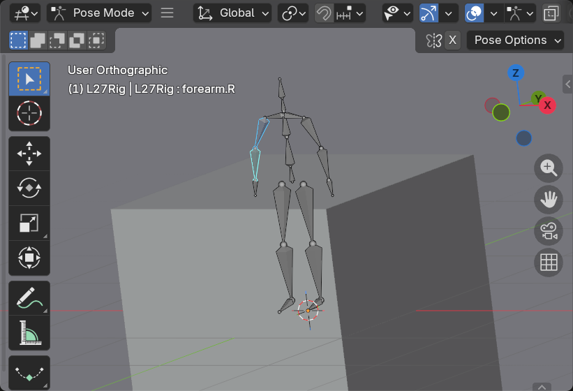
🚪 Mode Switching
How to enter Pose Mode:
- Method 1: Select armature →
Ctrl+Tab - Method 2: Select armature → Mode dropdown (top-left) → Pose Mode
- Method 3: Select any bone in viewport → automatically enters Pose Mode
- Bones turn blue/cyan when in Pose Mode
Exiting Pose Mode:
Ctrl+Tab: Toggle back to Object Mode- Or use mode dropdown
- Or
Tabif you want Edit Mode instead
Visual indicators:
- Object Mode: Bones appear as outline (can't select individual bones)
- Pose Mode: Bones are selectable, colored (blue = unselected, cyan = selected)
- Edit Mode: Bones editable (changing rig structure—usually don't need)
What you can do in each mode:
- Object Mode: Move entire armature (move whole character in scene)
- Pose Mode: Pose character (rotate/move bones—THIS IS WHERE YOU ANIMATE)
- Edit Mode: Edit rig structure (add/remove bones, change parenting)
Selecting Bones
🎯 Choosing What to Pose
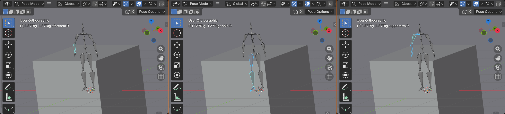
Selection methods:
- Click bone: Select single bone
- Shift+Click: Add to selection (multiple bones)
- Box select (
B): Draw box around bones - Circle select (
C): Paint selection - Select all (
A): All bones in armature - Deselect all (
Alt+A): Clear selection
Hierarchy selection:
- Select linked (
L): All bones connected to selected - Select hierarchy (Shift+G → Children): All child bones
- Select pattern (Shift+G → Similar): Bones with similar properties
Symmetry selection:
- Select → Select Mirror: Select opposite side bone
- Example: Select Left_Arm → Select Mirror → Right_Arm also selected
- Requires proper naming (.L / .R or _L / _R)
- Huge time saver for symmetrical posing
Selection tips:
- Active bone (last selected) appears brighter
- Can see selected bones in Outliner (highlighted)
- X-Ray mode (Viewport Overlays → X-Ray) shows bones through mesh
- In front display (bone properties) makes bones always visible
Transforming Bones
🔧 Moving, Rotating, Scaling
Basic transformations (same as objects):
G: Move bone (translation)R: Rotate bone (most common for posing)S: Scale bone (rarely used in posing)X,Y,Z: Constrain to axis after G/R/S
Rotation is primary tool:
- Most character posing is rotation (bending joints)
Rthen move mouse: Free rotationRX/Y/Z: Rotate on specific axisRX90: Rotate 90° on X-axis- Hold
Shift: Finer control - Hold
Ctrl: Snap to 5° increments
Local vs Global rotation:
- Local: Bone's own orientation (default, usually what you want)
- Global: World space orientation
- Toggle: Header → Transform Orientation dropdown
- For character posing, Local usually feels most natural
IK bone movement:
- IK targets (hands, feet) use
G(move) primarily - Move hand controller → arm bends automatically
- Can also rotate IK targets for wrist/ankle twist
- Pole targets adjust which direction IK bends (elbow/knee direction)
Scale in Pose Mode:
- Usually don't scale bones in posing
- Exception: Bendy bones (B-bones) can stretch
- Scaling changes bone length, affects children
- Use carefully or avoid
Pose Mode Keyframing
🔑 Saving Poses
Keyframing in Pose Mode (same as object animation):
- Pose character (rotate/move bones)
- Press
I→ Insert Keyframe menu - Choose what to keyframe:
- Location: Bone position (IK targets mostly)
- Rotation: Bone rotation (most common)
- LocRot: Both location and rotation
- Available: Only properties that changed
- Keyframe created for ALL selected bones
Critical: Select all relevant bones before keyframing
- If you pose 10 bones but only 1 selected when pressing
I - Only that 1 bone gets keyframed!
- Other 9 bones won't hold pose
- Best practice: Select all posed bones, then
I
Whole Character keying:
- Select all bones (
A) - Press
I→ LocRot or Available - Entire character pose saved
- Safe but creates many keyframes
Selective keying (more efficient):
- Only select bones that changed from last keyframe
- Only those bones get keyframed
- Keeps keyframe count manageable
- Requires discipline and experience
Visual feedback:
- Keyframed bones turn orange/yellow (whole bone colored)
- Timeline shows yellow diamonds
- Dope Sheet shows per-bone keyframes
- Clear visual indication of what's animated
Pose Library and Presets
📚 Reusable Poses
Pose Library (Asset Browser):
- Save commonly used poses
- Example: Idle stance, T-pose, relaxed pose
- Apply saved pose with one click
- Saves time in production
Creating pose asset:
- Pose character
- Select all bones
- Pose → Pose Library → Create Pose Asset
- Name pose (e.g., "Idle_Relaxed")
- Pose saved to Asset Browser
Applying pose asset:
- Open Asset Browser
- Find saved pose
- Click or drag onto character
- Character assumes pose instantly
When to use pose library:
- Frequent poses (idle, walk contact poses)
- Starting poses for sequences
- Symmetrical poses (save one, flip for other side)
- Not needed for one-time unique poses
Pose Mode Tools
🛠️ Additional Utilities
Copy/Paste pose:
- Pose one side of character (e.g., left arm)
- Select bones →
Ctrl+C(Copy Pose) - Select mirror bones (right arm)
Ctrl+Shift+V(Paste Pose Flipped)- Creates symmetrical pose automatically
Clear pose/transforms:
- Select bones
Alt+G: Clear location (reset to 0)Alt+R: Clear rotation (reset to rest pose)Alt+S: Clear scale (reset to 1)- Useful for resetting after experimentation
Relax/smooth pose:
- Pose → Relax Pose
- Softens extreme poses
- Useful if pose looks too stiff
- Adjustable strength
Propagate pose:
- Pose → Propagate Pose
- Copies current pose to range of frames
- Options: To next keyframe, to end, etc.
- Advanced feature for specific workflows
X-Ray and Display Options
👁️ Visibility Settings
X-Ray mode:
- Viewport Overlays → Enable X-Ray (or
Alt+Z) - See bones through mesh
- Essential for selecting bones inside character
- Can adjust X-Ray opacity (slider)
Bone display types:
- Armature Properties → Viewport Display
- Octahedral: Default 8-sided shape
- Stick: Simple lines (cleaner for complex rigs)
- B-Bone: Rounded segments
- Envelope: Shows influence area
- Choose based on rig complexity and preference
In Front display:
- Armature Properties → Viewport Display → In Front
- Bones always render on top of mesh
- Always visible, never occluded
- Alternative to X-Ray mode
Bone colors:
- Can color-code bones for organization
- Example: Red = left, blue = right, green = center
- Bone Properties → Viewport Display → Custom Color
- Or use bone groups for automatic coloring
💡 Pose Mode is Your Studio: Think of Pose Mode as a photographer's studio and your character as the model. You're directing the model into poses, arranging the shot, making adjustments. The better you know your studio (shortcuts, tools, options), the faster you work. Professional animators live in Pose Mode—it's as natural as breathing. At first, switching modes feels clunky, selecting bones feels awkward. That's normal. With practice, it becomes automatic. Your fingers learn the shortcuts. Your eye learns to spot which bones to select. Suddenly, posing feels effortless. That's when you stop fighting the tools and start creating.
🎯 Character Posing Principles
Creating believable character poses is an art. It's not just about technically correct joint angles—it's about weight, balance, appeal, and storytelling. Let's learn the principles that make poses read as alive and intentional.
The Line of Action
〰️ The Gesture Curve
What is line of action?
- Imaginary curved line running through character's body
- Represents overall flow and energy of pose
- Strong line of action = dynamic, clear pose
- Weak line of action = stiff, unclear pose
How to see line of action:
- Squint at your character—what's the major curve?
- Usually runs from head through spine to feet
- Sometimes extends through limbs
- Should be readable in silhouette
Types of lines:
- C-curve: Character bends in one direction (reaching, leaning)
- S-curve: Body curves in alternating directions (contrapposto, natural stance)
- Straight line: Rigid, at attention (formal, tense, mechanical)
- Complex curve: Multiple bends (action poses, fighting)
Strengthening line of action:
- Tilt head in direction of curve
- Extend limbs along curve direction
- Use spine rotation to create curve
- Avoid symmetry (breaks line of action)
Example applications:
- Running: Strong C-curve, body leaning forward
- Relaxed standing: Gentle S-curve through body
- Soldier at attention: Straight vertical line
- Dancer: Dramatic S-curve, extended limbs
Weight and Balance
⚖️ Center of Gravity
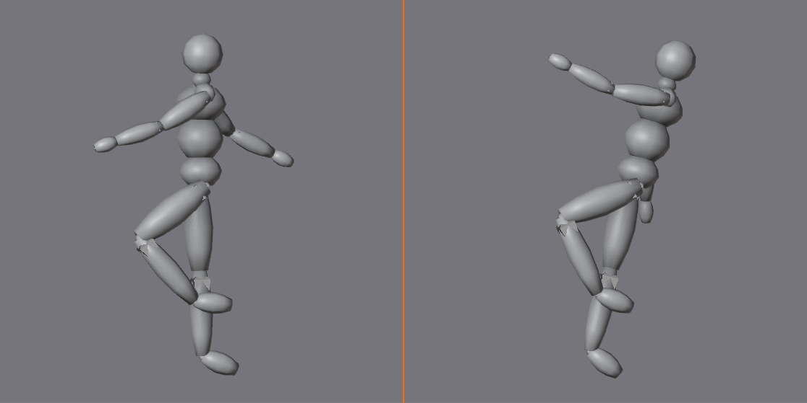
Center of gravity (COG) basics:
- Point where character's mass balances
- Usually around pelvis/hips area
- For character to stand, COG must be over feet
- Violate this and character looks like falling
Weight distribution:
- Standing on both feet: COG centered between feet
- Standing on one foot: COG shifts over that foot
- Leaning: COG moves in direction of lean
- Off-balance: COG outside support base (falling, dynamic motion)
The plumb line test:
- Imagine vertical line from COG (hips) to ground
- Should land within foot support area
- If outside, character is falling (unless intentionally dynamic)
- Easy way to check if pose is balanced
Contrapposto (natural standing):
- Weight on one leg, other leg relaxed
- Hips tilt (weight-bearing side higher)
- Shoulders tilt opposite direction (balance)
- Creates natural S-curve, looks relaxed and organic
- Default for "natural standing" pose
Common balance mistakes:
- Character leans without shifting weight (looks falling)
- COG not over support foot when standing on one leg
- Symmetrical pose (both legs same, looks stiff)
- No weight shift during walk (looks like floating/sliding)
Silhouette and Clarity
👤 Readable Poses
The silhouette test:
- Render character as pure black silhouette
- Can you tell what action is?
- Can you identify body parts?
- Strong pose = readable silhouette
Creating clear silhouettes:
- Avoid overlap: Keep limbs separate when possible
- Extend limbs: Arms away from body, legs apart
- Profile works best: 3/4 or side view clearer than front
- Negative space: Gaps between limbs create interesting shapes
Breaking silhouette intentionally:
- Sometimes overlap is okay (crossed arms, holding object)
- Use sparingly and intentionally
- Make sure overall action still reads
- Detail can be seen when close, silhouette matters at distance
Camera angle considerations:
- Pose should work from camera angle that matters
- Don't optimize for front view if camera is side view
- Consider final framing when posing
- Game characters need to read from multiple angles
Asymmetry and Appeal
🎨 Making Poses Interesting
Avoid "twins" (symmetrical limbs):
- Both arms same angle = boring, stiff
- Both legs straight = unnatural, robotic
- Symmetry feels dead (except for very specific moments)
- Real people are naturally asymmetric
Creating asymmetry:
- One arm raised, other lowered
- Weight on one leg, other relaxed
- Head tilted to one side
- One shoulder higher than other
- Variety creates visual interest
Oppositional movement:
- When one side goes forward, other goes back
- Example: Walking—right arm forward, right leg back
- Creates natural counter-balance
- Prevents stiff, parallel movements
The appeal factor:
- Some poses just feel better than others
- Clean lines, interesting shapes, dynamic flow
- Not always explainable—develop eye through practice
- Study poses you like, figure out what makes them work
Twinning and Breaking Symmetry
🔀 The Anti-Symmetry Rule
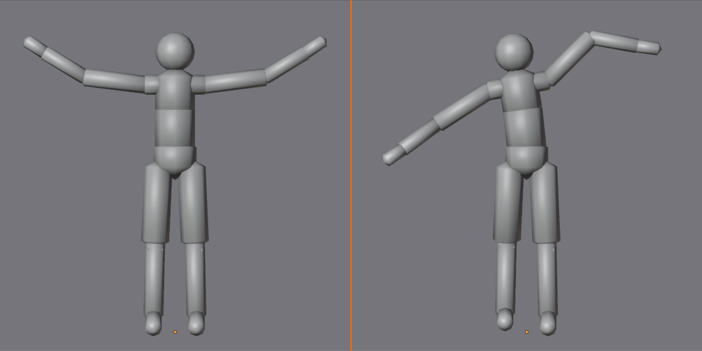
What is twinning?
- When opposite limbs mirror each other exactly
- Both arms at same angle
- Both legs in same position
- Fingers all bent the same way
- Looks artificial, CG-like, dead
Why twinning happens:
- Beginners copy-paste poses to opposite side
- Selecting both arms and rotating together
- Not thinking about natural body mechanics
- Trying to save time by mirroring
How to break symmetry:
- Different angles: One arm 45°, other 30°
- Different heights: One shoulder up, other down
- Different timing: Arms don't move in sync
- Different energy: One hand relaxed, other tense
When symmetry is okay:
- Very specific poses: Attention, surrender (hands up), meditation
- Momentary: One frame during transition can be symmetric
- Stylized: Some cartoon styles use symmetry intentionally
- But even then, add subtle variation
Emotion and Personality in Poses
🎭 Poses Tell Stories
Body language communicates character:
- Confident: Chest out, shoulders back, head high
- Timid: Shoulders hunched, head down, arms close
- Happy: Lifted chest, bouncy pose, open arms
- Sad: Slumped shoulders, heavy posture, head drooping
- Angry: Tense muscles, clenched fists, forward lean
Same action, different characters:
- Walk: Confident = swagger, Timid = scurry
- Wave: Enthusiastic = full arm, Shy = small hand wiggle
- Sit: Relaxed = slouch, Nervous = perched on edge
- Timing and pose choices define personality
Exaggeration for clarity:
- Real-life emotion is often subtle
- Animation needs to read clearly, even at distance
- Push poses 10-20% beyond realistic
- Shoulders MORE hunched, chest MORE puffed
- Exaggeration ≠ caricature (unless that's your style)
Subtlety in detail:
- Major pose = broad emotion
- Hand details = refinement (clenched vs relaxed)
- Head tilt = nuance (curiosity, confusion)
- Layers of detail build complete performance
💡 Posing is Acting Without Words: Every pose is a performance. When you rotate that shoulder, you're making an acting choice. Confident or uncertain? Aggressive or defensive? The pose tells the story. Professional animators think like actors—they understand motivation, emotion, subtext. They don't just make characters move; they make characters feel. Before posing, ask: "What is this character feeling?" Then let that answer guide your hands. The pose should express the emotion before you even add motion. If a single frame tells the story, you've mastered posing. If it doesn't, keep refining until it does.
🎬 Your First Character Animation
Time to put theory into practice. We'll create a simple character animation—a friendly wave. This project teaches the complete workflow from pose to finished animation, reinforcing everything you've learned while keeping complexity manageable.
Project Setup
🎯 Project Overview
Create a character waving animation that demonstrates:
- Proper posing: Clear poses with good silhouettes
- Anticipation: Wind-up before wave
- Follow-through: Hand settles after wave
- Overlapping action: Body and arm move at different times
- Appeal: Friendly, natural motion
Duration: 72 frames (3 seconds at 24fps)
Phase 1: Get a Character (5 min)
🎭 Finding or Creating Your Actor
Option 1: Use default Blender rig (Rigify)
- Add → Armature → Basic Human (Rigify)
- Simple but functional humanoid rig
- May need to generate rig: Armature Properties → Generate Rig
- Gives you functional character immediately
Option 2: Simple stick figure
- Create basic armature manually
- Bones for spine, head, arms, legs
- No mesh needed—bones alone work for learning
- Fastest to set up, focuses on animation not modeling
Option 3: Download free rig
- Blender Cloud: Cloud.blender.org (subscription)
- Mixamo: Free rigged characters
- BlendSwap: Community-created rigs
- Many options available—choose simple one
For this lesson:
- Any humanoid rig works
- Simpler is better for learning
- Make sure rig has arms and hands (need those for waving!)
- Test rig in Pose Mode—can you move bones?
Phase 2: Plan the Animation (5 min)
📋 Thumbnail and Timing
Key poses to create:
- Idle (Frame 1): Neutral standing pose
- Anticipation (Frame 12): Slight crouch, arm pulls back
- Wave Start (Frame 24): Arm raised, hand at shoulder height
- Wave Peak (Frame 36): Arm fully extended, hand high
- Wave Middle (Frame 48): Hand waves side to side
- Settle (Frame 60): Arm lowering
- Return to Idle (Frame 72): Back to neutral
Timing breakdown:
- Frames 1-12: Idle (0.5 sec)
- Frames 12-24: Anticipation (0.5 sec)
- Frames 24-48: Wave motion (1 sec)
- Frames 48-72: Settle and return (1 sec)
- Total: 3 seconds
Quick sketch (optional but helpful):
- Draw stick figures of key poses on paper
- Or just visualize in your head
- Know roughly what you're going for
- Saves time experimenting in 3D
Phase 3: Block Key Poses (20 min)
🎨 Creating the Foundation
Pose 1: Idle (Frame 1)
- Go to frame 1
- Enter Pose Mode (
Ctrl+Tab) - Create neutral standing pose:
- Weight slightly on one leg (contrapposto)
- Arms relaxed at sides
- Head straight or slight tilt
- Natural, relaxed posture
- Select all bones (
A) - Press
I→ LocRot (keyframe everything)
Pose 2: Anticipation (Frame 12)
- Go to frame 12
- Create wind-up pose:
- Slight crouch (lower hips a bit)
- Right shoulder pulls back slightly
- Right arm starts to lift
- Body leans slightly opposite direction
- Sets up energy for wave
- Select all bones
I→ LocRot
Pose 3: Wave Start (Frame 24)
- Go to frame 24
- Arm raising:
- Right arm bent, hand at shoulder height
- Elbow out to side
- Palm facing forward
- Body extends from crouch
- Weight shifts slightly
- Select all bones,
I→ LocRot
Pose 4: Wave Peak (Frame 36)
- Go to frame 36
- Maximum extension:
- Arm fully raised (not quite straight—keep slight bend)
- Hand highest point
- Slight stretch in torso
- Head tilts toward raised arm
- Friendly, open pose
- Select all bones,
I→ LocRot
Pose 5: Wave Motion (Frames 42, 48, 54)
- Frame 42: Hand waves left (rotate wrist/hand)
- Frame 48: Hand center
- Frame 54: Hand waves right
- Just hand/wrist moving, arm stays up
- Small, quick movements
- Keyframe hand bones only (not whole body)
Pose 6: Settle (Frame 60)
- Arm lowering:
- Arm halfway down
- Hand relaxing
- Body returning to neutral
- Starting to relax pose
- Select all bones,
I→ LocRot
Pose 7: Return to Idle (Frame 72)
- Return to original idle pose
- Should match frame 1 exactly (or very close)
- Arms back at sides
- Weight distribution same as start
- Can copy pose from frame 1 if needed
- Select all bones,
I→ LocRot
Phase 4: Review and Timing (10 min)
⏱️ Check the Rhythm
Playback test:
- Press
Spacebarto play animation - Watch full sequence multiple times
- Does timing feel natural?
- Too fast? Too slow? Adjust keyframe positions
Common timing adjustments:
- Anticipation too quick: Move frame 12 pose to frame 16
- Wave too slow: Compress hand wave keyframes closer
- Return too abrupt: Add more frames between settle and end
- Use Dope Sheet or Timeline to move keyframes
Check silhouette:
- Viewport Shading → Solid with MatCap
- Or render quick preview
- Can you tell character is waving?
- Is arm clearly visible (not hidden behind body)?
Check poses hold:
- Scrub through animation slowly
- Do poses maintain appeal between keyframes?
- Any weird in-between positions?
- If yes, may need breakdown poses (next phase)
Phase 5: Refine with Breakdowns (15 min)
🎯 Perfecting Motion
What are breakdowns?
- Poses between key poses
- Guide interpolation for better arcs
- Prevent weird in-betweens
- Add nuance and control
Where to add breakdowns:
- Between anticipation and wave start (frame 18)
- Halfway through arm raise if needed
- Between settle and return if motion jerky
- Wherever interpolation creates bad poses
Creating breakdown pose:
- Scrub to problem area (e.g., frame 18)
- Adjust pose slightly (small corrections)
- Select modified bones only
I→ LocRot- New keyframe guides interpolation
Overlapping action refinement:
- Body should move slightly before arm (or vice versa)
- Example: Crouch (frame 12) → body lifts frame 14 → arm raises frame 16
- Creates more organic, layered motion
- Offset keyframes by 2-4 frames
Hand detail (if rig supports fingers):
- Fingers don't all move together
- Wave: Fingers slightly curl and extend
- Add finger keyframes at wave peaks
- Subtle detail that adds life
Phase 6: Polish in Graph Editor (10 min)
📈 Curve Refinement
Open Graph Editor:
- Change editor to Graph Editor
- Select character armature
- View bone rotation curves
Check arm raise curve:
- Should see smooth arc from low to high
- Ease out at anticipation (starts slow)
- Ease in at peak (ends slow)
- If linear, change to Bezier interpolation
Check hand wave curve:
- Should see wave pattern (oscillation)
- Peak at each side of wave
- Quick snappy motion = steeper curves
- Adjust handles for desired speed
Common curve fixes:
- Motion too floaty: Shorten Bezier handles (less ease)
- Motion too robotic: Ensure Bezier, not Linear
- Overshoot: Change to Auto Clamped handles
- Jerky: Add breakdown keyframes, smooth curves
Success Criteria
✅ Quality Checklist
Posing quality:
- ✓ Clear silhouettes at all key poses
- ✓ Character balanced (COG over feet)
- ✓ No symmetrical "twinning"
- ✓ Line of action visible
- ✓ Poses show personality (friendly wave)
Animation principles applied:
- ✓ Anticipation before arm raise
- ✓ Follow-through on hand after wave
- ✓ Overlapping action (body and arm timing offset)
- ✓ Arcs on arm movement (not straight)
- ✓ Proper ease in/out (Bezier curves)
Technical execution:
- ✓ All necessary bones keyframed
- ✓ Timing feels natural (not too fast or slow)
- ✓ No weird in-between poses
- ✓ Graph Editor curves smooth
- ✓ Animation loops cleanly (frame 72 matches frame 1)
💡 Your First Character Animation: This simple wave might not seem like much, but you just crossed a major threshold. You posed a character. You created performance. You applied animation principles to a complex articulated figure. Every professional character animator started exactly here—with simple gestures. The wave you just created uses the same techniques as a feature film character performance. Same principles, same tools, same workflow. The difference is just practice and complexity. You have the foundation. Everything else is refinement. Congratulations—you're officially a character animator.
🚶 Walk Cycle Theory
The walk cycle is the fundamental character animation exercise. It's to character animation what the bouncing ball is to object animation—the essential building block. Understanding walk cycles teaches timing, weight, balance, and all 12 animation principles simultaneously.
Why Walk Cycles Matter
👣 The Essential Skill
Walk cycles teach everything:
- Weight shift: Body rocks side to side
- Balance: COG must stay over support foot
- Timing: Each phase has specific duration
- Arcs: Feet follow curved paths
- Overlapping action: Arms, legs, body move at different times
- Follow-through: Hair, clothing continue after step
Walk cycles are everywhere:
- Games: Every character needs walk cycle
- Films: Background characters walking
- Commercials: Product demonstrations with people
- VR/AR: Interactive characters
- Most common character animation in production
Walk reveals character:
- Happy person: Bouncy, lifted walk
- Sad person: Dragging feet, slumped
- Confident: Swagger, chest out
- Sneaky: Low, quiet steps
- Same mechanics, different personality
Portfolio essential:
- Every animator portfolio needs walk cycle
- Demonstrates core competency
- Shows understanding of weight and timing
- First thing animation directors look for
The Four Key Poses
🔑 Walk Cycle Structure
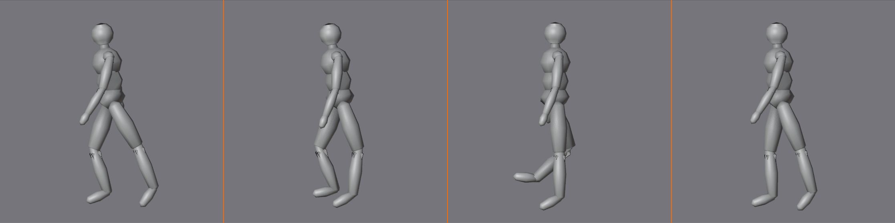
Contact Pose (Frame 1 and 13):
- Both feet on ground
- Legs form wide "V" shape
- Body at lowest point (hips down)
- Front leg straight, back leg bent
- Arms at opposite: front arm back, back arm forward
- This is the "passing" moment between steps
Down Pose (Frame 4):
- One foot on ground (support leg)
- Other foot lifting off (beginning to swing forward)
- Body compressed—lowest point of walk
- Weight fully on support leg
- Slight squat absorbs impact
Passing Pose (Frame 7):
- One foot on ground (support leg straight)
- Other foot passing by, knee high
- Body at highest point (hips up)
- Support leg extended/straight
- Passing leg bent at apex
- COG directly over support foot
Up Pose (Frame 10):
- Transitioning to next contact
- Front foot about to land
- Body extending upward
- Anticipating next ground contact
Then cycle repeats:
- Frame 13 = Frame 1 (same pose, opposite legs)
- Creates seamless loop
- One complete cycle = 2 steps = 24 frames (at 24fps = 1 second)
Body Mechanics in Walking
⚙️ How Walking Really Works
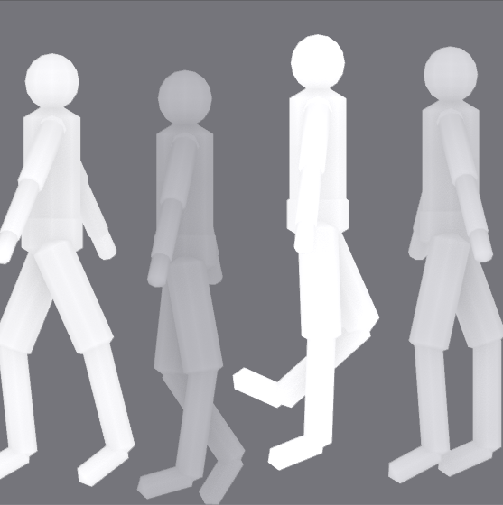
Vertical motion (up and down):
- Body rises and falls with each step
- Down at contact (both feet on ground)
- Up at passing (one foot on ground, leg extended)
- Creates gentle bobbing motion
- About 1-2 inches vertical travel in normal walk
Horizontal motion (forward):
- Constant forward movement
- Hips/root bone move at steady speed
- Legs propel body forward
- No stopping or starting (smooth glide forward)
Lateral motion (side to side):
- Hips shift over support foot
- Sway from side to side
- Keeps COG balanced over planted foot
- Creates natural hip swing
- About 1 inch side-to-side for normal walk
Rotation (twist):
- Shoulders rotate opposite to hips
- Right foot forward → left shoulder forward
- Creates counter-rotation for balance
- Spine twists slightly with each step
- Prevents rigid, robotic walk
Arm Swing
💪 Oppositional Movement
Natural arm swing pattern:
- Right leg forward → left arm forward
- Left leg forward → right arm forward
- Opposite arms and legs (counter-balance)
- Same side arm/leg = awkward, wrong
Arm swing timing:
- Arms swing in rhythm with legs
- Forward arm at same time as opposite forward leg
- Natural pendulum motion
- Driven by shoulder rotation
Arm swing amount:
- Casual walk: Arms swing naturally, relaxed
- Power walk: Bigger arm swing, bent elbows
- Sad walk: Minimal arm swing, arms hang
- March: Exaggerated, rigid arm swing
Hand position:
- Hands slightly closed (natural)
- Not clenched fists (too tense)
- Not flat open (too stiff)
- Relaxed, gentle curve to fingers
Foot Contact and Roll
👟 The Foot Mechanics
Foot roll sequence:
- Heel strike: Heel contacts ground first
- Foot plant: Whole foot flattens to ground
- Roll through: Weight transfers toward toe
- Toe push: Toes push off, heel lifts
- Lift off: Foot leaves ground
Why foot roll matters:
- Without roll: Flat-footed, awkward walk
- With roll: Natural, fluid walk
- Adds 3-4 extra keyframes per foot per step
- Worth the effort for believability
IK foot controls:
- Most rigs have IK for feet (foot stays planted)
- Foot roll usually controlled by custom property
- Or separate toe control bone
- Check rig documentation for foot controls
Simplified approach (beginner):
- Can skip detailed foot roll initially
- Just plant foot flat, lift flat
- Still creates functional walk
- Add foot roll later for polish
Walk Cycle Timing
⏱️ Frame Breakdown
Standard walk cycle (24 frames = 1 second):
- Frame 1: Contact (right leg forward)
- Frame 4: Down
- Frame 7: Passing
- Frame 10: Up
- Frame 13: Contact (left leg forward—mirrors frame 1)
- Frame 16: Down
- Frame 19: Passing
- Frame 22: Up
- Frame 25: Contact (loops back to frame 1)
Speed variations:
- Slow walk: 32-36 frames per cycle (1.3-1.5 sec)
- Normal walk: 24 frames per cycle (1 sec) ← START HERE
- Fast walk: 16-20 frames per cycle (0.67-0.83 sec)
- Run: 12-16 frames per cycle (0.5-0.67 sec)
Beginner recommendation:
- Start with 24-frame cycle (standard)
- Key poses at frames 1, 7, 13, 19
- Add breakdowns at 4, 10, 16, 22 if needed
- Can always adjust timing later
💡 The Walk Cycle: Animation's Rosetta Stone: If you can animate a good walk cycle, you can animate anything. Walk cycles demand you understand weight, timing, balance, arcs, overlapping action, follow-through—all twelve animation principles applied simultaneously. There's nowhere to hide. A bad walk cycle reveals every gap in your understanding. A good walk cycle proves you've mastered the fundamentals. This is why every animator is judged by their walk. Not their fancy sword fight. Not their emotional acting. Their walk. Because walk is truth. Learn to walk, and running, jumping, fighting, dancing all become variations on patterns you already understand. Master the walk.
🎯 Project: Your First Walk Cycle
Time to build a complete walk cycle from scratch. This project applies everything from the theory section while keeping complexity manageable. You'll create a looping walk cycle that demonstrates proper weight shift, timing, and all four key poses.
🎯 Project Overview
Goal: Create a seamless 24-frame walk cycle
What you'll demonstrate:
- Four key poses: Contact, down, passing, up
- Weight shift: Body rocks side to side naturally
- Proper timing: Rhythm feels human, not robotic
- Oppositional movement: Arms and legs counter-rotate
- Seamless loop: Frame 1 and 25 match perfectly
Time estimate: 60-90 minutes
Difficulty: Intermediate (requires patience and iteration)
Setup and Preparation (10 min)
🎭 Character and Scene Setup
Use same character from wave project or fresh rig:
- Humanoid rig with arms and legs
- IK controls for feet highly recommended
- FK or IK for arms (either works)
- Test rig works before starting
Scene configuration:
- Character in center of scene
- Add ground plane (Shift+A → Mesh → Plane, scale up 10x)
- Position character feet on ground
- Camera at 3/4 view (see character from slight side angle)
- Good lighting so you can see forms clearly
Timeline setup:
- Set end frame to 25
- Framerate: 24 fps (standard)
- Timeline visible at bottom
- Dope Sheet or Graph Editor in secondary panel
Pose Mode setup:
- Select character armature
- Enter Pose Mode (
Ctrl+Tab) - Enable X-Ray mode to see bones through mesh
- Auto-Keying ON (helpful but optional)
⚠️ Before You Start
Important reference:
- Stand up and walk around your room
- Feel weight shift to each foot
- Notice hips sway side to side
- Notice opposite arm/leg pattern
- Watch yourself in mirror if possible
Best learning tool: Your own body. Use it!
Phase 1: First Contact Pose (Frame 1)
🔑 The Foundation Pose
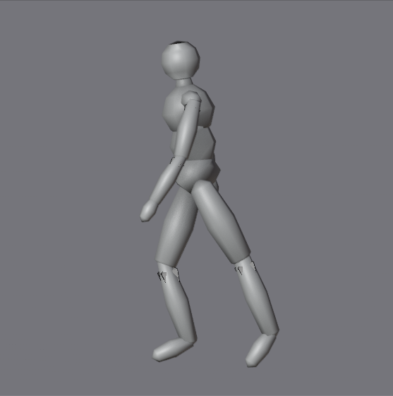
Go to frame 1:
- Scrub timeline to frame 1
- This is your reference pose
- Everything else built from this
Position the legs:
- Right leg forward:
- Foot flat on ground
- Heel slightly ahead of body center
- Leg mostly straight (slight knee bend okay)
- Foot pointing forward
- Left leg back:
- Foot flat on ground
- Behind body center
- Knee bent more than front leg
- Creating wide stance
- Foot spacing:
- About shoulder-width apart side-to-side
- About 2-3 feet apart front-to-back
- Legs form spread "V" when viewed from front
Position the hips:
- Lower hips (body compressed)
- Both feet on ground = lowest point of walk
- Hips shift slightly toward left (over back foot)
- Pelvis/root bone between feet, centered
Position the torso:
- Spine mostly upright (slight forward lean natural)
- Chest rotates slightly (right shoulder back, left forward)
- Sets up oppositional movement
- Not twisted too much (subtle)
Position the arms:
- Left arm forward: (opposite right leg)
- Swings naturally forward
- Slight bend at elbow
- Hand roughly at hip height
- Right arm back:
- Swings naturally behind
- Straighter than forward arm
- Hand behind hip
- Hands relaxed, fingers gently curved
Head and neck:
- Head upright, looking forward
- Slight tilt natural (toward raised shoulder)
- Neck follows torso rotation subtly
Keyframe everything:
- Select all bones (
A) - Press
I→ LocRot - Yellow diamonds appear in timeline
- Pose saved at frame 1
Phase 2: Passing Pose (Frame 7)
🔑 The High Point
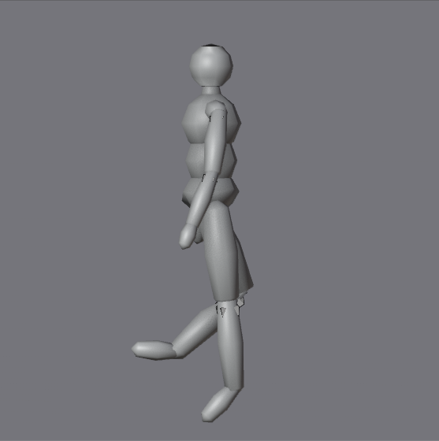
Go to frame 7:
- This is opposite of contact
- Body at highest point
- One foot on ground, other passing by
Position the legs:
- Left leg (support leg):
- Foot flat on ground, under body center
- Leg extended/straight (locked knee)
- Bears full weight of character
- Slight hyperextension okay for pushed look
- Right leg (passing leg):
- Knee bent, lifted high
- Foot passing by support leg at knee height
- Thigh roughly horizontal
- Foot dangling (toes point down slightly)
- This leg swinging from back to front
Position the hips:
- Raise hips (body extended)
- Highest point of walk cycle
- Hips directly over left foot (support leg)
- Significant side-to-side shift from frame 1
- Pelvis/root bone centered over support foot
Position the torso:
- Chest rotation reversed from frame 1
- Left shoulder back, right shoulder forward now
- Counter-rotation to legs
- Spine slightly stretched (character "tall")
Position the arms:
- Right arm forward: (opposite left support leg)
- Maximum forward swing
- Hand at chest height
- Elbow bent
- Left arm back:
- Maximum backward swing
- Hand behind hip
- Arm straighter
- Arms at peak of swing arc
Check balance:
- Viewport from front: COG should be over support foot
- If character looks like falling sideways, adjust hips
- Support leg should feel like bearing all weight
Keyframe everything:
- Select all bones (
A) I→ LocRot- Pose saved at frame 7
Phase 3: Second Contact Pose (Frame 13)
🔑 The Mirror Pose
Go to frame 13:
- This mirrors frame 1
- Opposite legs forward
- Same compressed, low position
Mirror the pose:
- Left leg forward now (was back at frame 1)
- Right leg back now (was forward at frame 1)
- Everything else flipped
- Same spacing, same height, opposite sides
Quick method—Pose Library or Copy:
- Go back to frame 1
- Select all bones (
A) Ctrl+C(copy pose)- Go to frame 13
Ctrl+Shift+V(paste mirrored pose)- May need to adjust based on rig
- Or manually recreate with opposite legs
Manual method:
- Position left leg forward (same as right was at frame 1)
- Position right leg back (same as left was at frame 1)
- Lower hips (same height as frame 1)
- Shift hips toward right foot now (was left at frame 1)
- Right arm forward (was left at frame 1)
- Left arm back (was right at frame 1)
- Reverse chest rotation
Verify the pose:
- Should look nearly identical to frame 1
- Just mirrored left/right
- Same low, compressed feeling
- Both feet on ground
Keyframe everything:
- Select all bones (
A) I→ LocRot- Pose saved at frame 13
Phase 4: Second Passing Pose (Frame 19)
🔑 The Second High Point
Go to frame 19:
- Mirrors frame 7
- Opposite leg as support
- Body high again
Mirror frame 7 pose:
- Right leg support now (was left at frame 7)
- Left leg passing now (was right at frame 7)
- Hips over right foot (was left at frame 7)
- Left arm forward (was right at frame 7)
- Right arm back (was left at frame 7)
Quick copy method:
- Go to frame 7
- Select all bones,
Ctrl+C - Go to frame 19
Ctrl+Shift+V(paste mirrored)- Adjust if needed
Keyframe everything:
- Select all bones (
A) I→ LocRot- Pose saved at frame 19
Phase 5: Loop the Cycle (Frame 25)
🔄 Creating Seamless Loop
Go to frame 25:
- This MUST match frame 1 exactly
- Creates seamless loop
- When animation repeats, no visible jump
Copy frame 1 to frame 25:
- Go to frame 1
- Select all bones (
A) Ctrl+C(copy pose)- Go to frame 25
Ctrl+V(paste pose—NOT mirrored this time)I→ LocRot (keyframe)
Why frame 25?
- Walk cycle is 24 frames (frames 1-24)
- Frame 25 is first frame of next cycle
- Must match frame 1 for seamless transition
- When looped, viewer can't tell where cycle starts/ends
Phase 6: First Playback Test
👀 Initial Review
Enable looping:
- Timeline → Animation menu → Cyclic
- Or set playback to Loop in Timeline header
- Animation repeats continuously
Press Spacebar and watch:
- Does character appear to walk?
- Or just shuffling/sliding?
- Timing too fast? Too slow?
- Body movements visible?
Common first-pass issues (totally normal):
- Feet slide on ground: Need to add root motion (next phase)
- Movement too floaty: Need breakdowns, adjust curves
- Looks robotic: Need breakdowns, more natural curves
- Arms look weird: Check oppositional movement
- Body pops up and down: Good! That's correct (just check amount)
Don't panic:
- First pass always looks rough
- Four key poses alone create basic walk
- But needs refinement (coming next)
- You've built the foundation
💡 The Rough Pass Victory: If your character looks even vaguely like it's attempting to walk—congratulations! That's the hardest part done. Most beginning animators stare at those four key poses thinking "this will never look like walking." But you just proved them wrong. It's rough. It's probably sliding. The timing's probably off. But there's a walk in there. Everything from here is refinement. You've crossed the threshold from "I can't do this" to "I'm making this better." Huge difference.
✨ Refining Your Walk Cycle
Now we transform that rough walk into something believable. This phase is about adding breakdowns, fixing foot slide, and polishing motion curves. This is where the magic happens—where mechanical movement becomes natural human locomotion.
Adding Breakdown Poses
🎨 The Missing Link Poses
What are breakdowns?
- Poses between key poses
- Guide interpolation for better results
- Prevent weird in-betweens
- Add control over motion
Where to add breakdowns:
- Frame 4 (between contact and passing)
- Frame 10 (between passing and next contact)
- Frame 16 (between second contact and second passing)
- Frame 22 (between second passing and loop)
Down pose (Frame 4):
- Body compressed, lowest point
- Left foot just lifting off ground
- Right foot (support) fully planted
- Weight transfer moment
- Hips slightly lower than contact pose
- Absorbing impact of step
Up pose (Frame 10):
- Body extending upward
- Right foot about to land
- Left foot (support) pushing off
- Anticipating next contact
- Hips slightly higher than passing pose
Repeat for second half:
- Frame 16: Down pose (mirror of frame 4)
- Frame 22: Up pose (mirror of frame 10)
- Same principles, opposite legs
How to create breakdowns:
- Scrub to frame (e.g., frame 4)
- Look at current pose (Blender interpolated)
- Adjust pose as needed (usually small tweaks)
- Select modified bones only (not all bones)
I→ LocRot- New keyframe guides interpolation
Fixing Foot Slide
🚫 Eliminating the Float
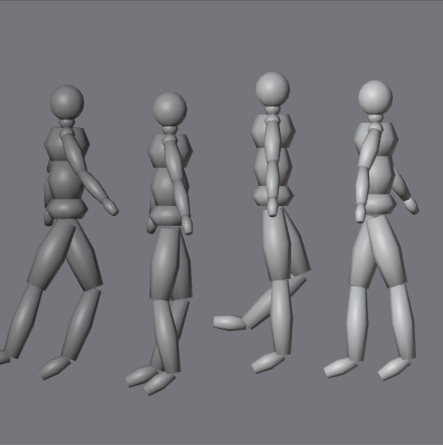
Why feet slide:
- Character not moving forward in space
- Feet stay in place while body moves
- Creates treadmill effect
- Destroys believability
Solution: Root motion or manual translation
Option 1: Move root bone forward
- Select root bone (hips/pelvis/COG)
- At frame 1, keyframe location
- At frame 13, move root forward (amount = stride length)
- Keyframe location
- At frame 25, move root forward again (same amount)
- Keyframe location
- Character now walks forward
How much to move forward?
- Depends on character size and stride
- Typical human: 2-3 feet per step
- In Blender units: about 0.6-1.0 units per step
- Eyeball it: foot should plant firmly then lift, not slide
Option 2: Foot locking (advanced)
- Use constraints to lock foot in place when planted
- IK rigs often have this built-in
- Check rig documentation
- More complex but more control
Testing for foot slide:
- Add grid floor to scene
- Play animation
- Watch contact foot—does it slide across grid?
- If yes: adjust root forward motion
- If no: foot is locked properly
Foot plants should feel sticky:
- Imagine walking through thick mud
- Planted foot glued to ground
- Only lifts when weight fully transferred
- No sliding or shifting
Graph Editor Polish
📈 Curve Refinement
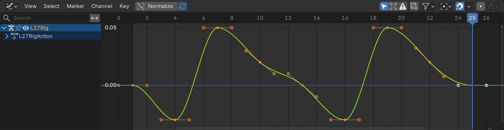
Open Graph Editor:
- Change one panel to Graph Editor
- Select character armature
- Select specific bone to see its curves
Vertical motion (hips Z-location):
- Should see wave pattern
- Troughs at frames 1 and 13 (contact, low)
- Peaks at frames 7 and 19 (passing, high)
- Smooth sine wave = natural bounce
- If jagged: adjust handles to create smooth curve
Side-to-side motion (hips X-location):
- Should see gentle oscillation
- Body rocks left, then right, then left
- Shifts occur at passing poses
- Smooth transitions, not sharp angles
Forward motion (root Y-location):
- Should see straight diagonal line (constant speed)
- Or slight ease in/out at contacts
- NO sudden stops or speed changes
- Character glides forward smoothly
Rotation curves (chest, shoulders):
- Should see counter-rotation
- Shoulders rotate opposite to hips
- Smooth curves, not linear
- Creates natural twist through spine
Adjusting curves:
- Select keyframe point on curve
- Press
V→ choose handle type - Auto Clamped: Safe default (no overshoot)
- Bezier: Full control (can create overshoot)
- Linear: Robotic (avoid unless specific effect)
- Drag handles to adjust curve shape
Weight and Feel
⚖️ Adding Heft
Weight is in the timing:
- Slow movements = heavy
- Fast movements = light
- Impact = momentary pause
Adding weight to walk:
- Slow down contact pose: Body pauses slightly when both feet down
- Emphasize down pose: Compress body more at lowest point
- Quick passing pose: Body extends rapidly at highest point
- Offset timing: Hips move before feet (or vice versa)
Heavy character walk:
- More time in contact poses
- Deeper squash at low points
- Minimal lift at passing (lower highest point)
- Slower overall timing (32 frames instead of 24)
- Feet stomp (sharp down, slow up)
Light character walk:
- Less time in contact poses (quick transitions)
- Higher lift at passing pose (bouncy)
- Faster overall timing (16-20 frames)
- Springs off ground
Test and adjust:
- Play animation at different speeds
- 50% speed: See all details
- 100% speed: Natural timing
- 150% speed: Check if still readable
- Adjust based on feel
Common Walk Cycle Problems
⚠️ Troubleshooting Guide
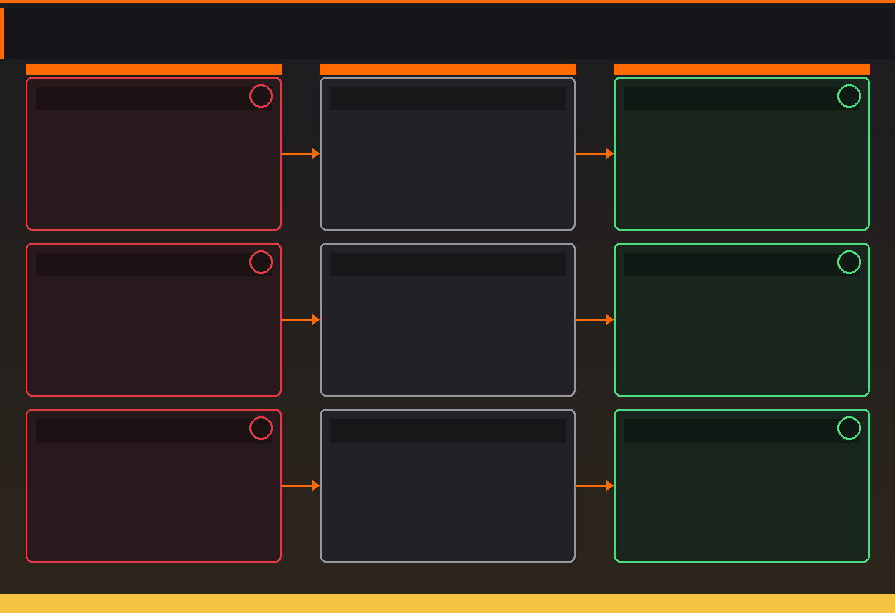
Problem: Character floating/sliding
- Cause: No root forward motion or wrong amount
- Fix: Add root motion; match stride length to leg extension
Problem: Walk looks robotic
- Cause: Linear interpolation or no breakdowns
- Fix: Change to Bezier curves; add down/up breakdown poses
Problem: Legs too straight
- Cause: Knees locked at all times
- Fix: Add slight knee bend even at passing pose; softer joints
Problem: Hips don't move enough
- Cause: Insufficient vertical or lateral movement
- Fix: Increase hip height difference (1-2 inches); shift side-to-side more
Problem: Arms and legs same side
- Cause: Forgot oppositional movement
- Fix: Right leg forward = left arm forward (always opposite)
Problem: Character falls forward/backward
- Cause: COG not over feet
- Fix: Adjust torso lean; check hips position over support foot
Problem: Walk doesn't loop smoothly
- Cause: Frame 25 doesn't match frame 1
- Fix: Copy frame 1 pose to frame 25 exactly; check all bones
Problem: Timing feels off
- Cause: Wrong frame spacing for key poses
- Fix: Adjust contact spacing; try 20-frame or 28-frame cycle
Problem: Too much bounce
- Cause: Vertical hip movement too extreme
- Fix: Reduce difference between high/low points; subtle is better
💡 The Walk Cycle Reality Check: Professional animators spend hours—sometimes days—on a single walk cycle. Why? Because walk is hard. It's mechanically complex, timing-dependent, and instantly reveals flaws. Your first walk cycle probably looks rough. Your tenth walk cycle might look rough. That's normal. Every walk cycle is practice. Every iteration teaches you something. Some animators have created literally hundreds of walk cycles over their careers and they still find new nuances. Don't expect perfection immediately. Expect progress. Each walk cycle you create will be better than the last. That's the goal.
🎭 Walk Cycle Variations
Once you have a basic walk cycle working, the real fun begins: personality. Every character walks differently. Age, mood, profession, personality—all revealed through walk. This is where animation becomes acting.
Personality Through Walk
🎬 Character in Motion
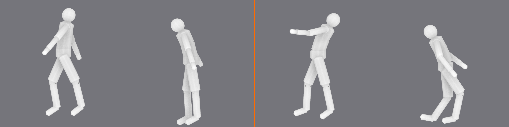
Happy/Confident walk:
- Higher vertical bounce (light on feet)
- Chest up, shoulders back
- Bigger arm swing
- Quicker timing
- Springy quality
- Feels: energetic, positive
Sad/Depressed walk:
- Minimal vertical bounce (heavy)
- Chest down, shoulders forward
- Tiny or no arm swing (arms hang)
- Slower timing
- Feet drag slightly
- Feels: burdened, tired
Sneaky/Cautious walk:
- Low body position (crouched)
- Very slow, deliberate steps
- Arms close to body
- Knees bent at all times
- Toes first contact (not heel)
- Feels: careful, hidden
Angry/Aggressive walk:
- Stomping feet (sharp down movement)
- Rigid posture
- Exaggerated arm swing
- Faster timing, sharp movements
- Chest forward (leading with chest)
- Feels: forceful, intense
Elderly walk:
- Bent posture (hunched)
- Shorter stride length
- Slower timing
- Careful foot placement
- Minimal arm swing
- Possibly cane or walker
- Feels: fragile, cautious
Swagger walk:
- Exaggerated hip swing
- Shoulders rock side-to-side
- Chest puffed out
- Slower, deliberate timing
- Feels: cocky, showing off
Professional vs. Beginner Walk
👔 Occupation Walks
Business professional:
- Upright posture
- Controlled arm swing
- Medium pace
- Purposeful stride
- Efficient, no wasted motion
Construction worker:
- Wider stance
- Heavy footfalls
- Strong, capable feel
- May carry weight (affects posture)
- Practical, grounded
Dancer/Athlete:
- Perfect balance
- Graceful arcs
- Light footfalls
- Controlled, precise
- Body awareness visible
Soldier/Guard:
- March timing (rigid)
- Synchronized arm/leg swing
- Upright, chest out
- Disciplined, strong
Speed Variations
⚡ From Stroll to Sprint
Slow walk (40-50 frames per cycle):
- Leisurely pace
- Exaggerated weight shift (more time to see it)
- Very deliberate foot placement
- Relaxed, casual feel
Normal walk (24-28 frames per cycle):
- Standard pedestrian pace
- Balanced motion
- Start here for most characters
Fast walk (16-20 frames per cycle):
- Rushing, late for something
- Longer strides
- More aggressive arm swing
- Higher energy
Run (12-16 frames per cycle):
- Both feet off ground (flight phase)
- No contact pose with both feet down
- Body leans forward
- Arms pump hard
- Different mechanics than walk
Experimenting with Style
✨ Make It Your Own
Ways to explore variations:
- Start with basic neutral walk (master this first)
- Pick one personality trait (happy, sad, sneaky, etc.)
- Adjust ONE element (timing, posture, arm swing, etc.)
- Preview and iterate
- Gradually add more personality
- Always maintain core walk mechanics
Reference is your friend:
- Record yourself walking with different moods
- Watch people in public spaces
- Study walk cycles in animation (pause frame-by-frame)
- Film references (actors in different roles)
- Every walk tells a story
Build a walk library:
- Save different walk cycles as separate files
- Build reusable pose libraries
- Create character-specific walk variations
- Reference your own past work
- Continuous improvement
💡 Walk Is Character: Animators say "if you can't see the character's face, you should still know who they are by how they move." Walk is the clearest expression of this principle. The exact same rig, same proportions, same everything—but change the walk, and you've changed the character completely. Confident business executive. Tired construction worker. Sneaky thief. Happy child. Elderly grandparent. All revealed through walk. Once you understand basic walk mechanics, you're no longer just creating motion. You're creating performance. You're acting through your character. This is where technical skill becomes art.
🚀 Beyond the Basics
You've mastered the fundamentals of character animation—posing, timing, and walk cycles. Now let's explore what comes next: the techniques and concepts that separate good character animation from great character animation. These are the skills you'll develop over months and years of practice.
Advanced Animation Principles
🎓 Deepening Your Understanding
Exaggeration (principle we haven't covered yet):
- Push poses beyond realistic for stronger read
- Not about making things cartoony (unless that's the style)
- About clarity and emphasis
- Example: Character surprised → eyes widen slightly more than real life
- Helps poses read at distance or in quick cuts
- Subtlety matters—too much looks wrong
Staging (making your animation readable):
- Present action clearly to camera
- Audience should never be confused about what's happening
- Use silhouette—if blacked out, still understand action
- Clear composition—know where to look
- Timing supports staging—important actions get time to read
Secondary action (supporting the main action):
- Action that supports primary action without dominating
- Example: Character walking (primary) while checking watch (secondary)
- Example: Character talking (primary) while gesturing (secondary)
- Adds richness and realism
- But never distracts from main action
Solid drawing/modeling (for character animators):
- Understanding anatomy, weight, balance
- Poses must feel three-dimensional
- Avoid "twinning" (symmetrical poses—boring)
- Create dynamic, interesting shapes
- Even in 3D, classic drawing principles apply
Appeal (the X-factor):
- Characters should be pleasant to watch
- Doesn't mean pretty or cute (villain can have appeal)
- Means clear design, interesting to look at
- Good silhouette = strong appeal
- Confident animation = appealing
- Hardest principle to define, easiest to feel
Facial Animation Basics
😊 Bringing Faces to Life
What makes facial animation special:
- Humans incredibly sensitive to faces
- Can detect tiny inaccuracies (uncanny valley)
- Most expressive part of character
- Where personality really shines
- Also most challenging aspect of character animation
Facial animation methods in Blender:
- Shape keys: Pre-modeled expressions that blend together
- Bone-based rigs: Bones control facial features
- Combination: Both methods together (most flexible)
- Your rig determines which method you use
Key facial poses to master:
- Neutral: Resting face, no expression
- Happy: Corners of mouth up, eyes squint slightly
- Sad: Corners of mouth down, eyebrows up and together
- Angry: Eyebrows down and together, jaw tense
- Surprised: Eyes wide, mouth open, eyebrows up
- Disgusted: Nose wrinkled, upper lip raised
- Fearful: Eyes wide, eyebrows up, mouth corners back
The eyes have it:
- Eyes are most important facial feature
- Where character looks = where audience looks
- Eye direction communicates thought
- Blinks add life (every 3-5 seconds typically)
- Eye darts (saccades) between targets, not smooth glides
- Dilated pupils = emotional arousal
Lip sync fundamentals:
- Match mouth shapes to speech sounds
- Key phonemes: A, E, I, O, U, M, B, P, F, V, L, R, S
- Most important: mouth opens/closes on beat
- Don't need perfect accuracy—suggestion works
- Emotion more important than precision
Starting simple with facial animation:
- Master eye movement and blinks first
- Add basic happy/sad expressions
- Practice simple mouth shapes
- Gradually add complexity
- Reference is essential—record yourself making faces
Acting for Animators
🎭 Thinking Like an Actor
Animation is performance:
- You're not just moving characters
- You're acting through characters
- Every choice reveals personality
- Animator = actor + director + cinematographer
Key questions to ask before animating:
- Who is this character? Personality, background, traits
- What do they want? Motivation, goal, desire
- What's stopping them? Obstacle, conflict, challenge
- How do they feel? Emotional state, mood
- What just happened? Context before this moment
- What happens next? Where action leads
Character motivation drives movement:
- Confident character: Takes space, expansive gestures
- Shy character: Makes self small, protective posture
- Aggressive character: Invades space, sharp movements
- Sad character: Collapsed posture, slow movements
- Every movement is a choice that reveals character
Subtext (what's really going on):
- Character says one thing, body language says another
- Example: Says "I'm fine" but posture is defensive
- Creates depth and realism
- Audience reads both layers
- Most interesting performances have subtext
Reference yourself:
- Act out the scene yourself
- Record video on phone
- Don't copy exactly—extract essence
- Feel the weight, timing, emotion
- Your body understands movement naturally
- Use that understanding in animation
Study real performances:
- Watch films, study actors
- Pause and analyze poses
- Notice small gestures and timing
- How do great actors convey emotion?
- Steal like an artist (learn from the best)
Working with Complex Rigs
🦾 Advanced Rigging Concepts
FK vs. IK (Forward Kinematics vs. Inverse Kinematics):
- FK: Rotate each bone in chain (shoulder → elbow → wrist)
- IK: Move end of chain, rest follows (move hand, elbow adjusts)
- IK better for planted feet/hands (stays in place)
- FK better for flowing, swinging motions
- Many rigs have FK/IK switch—use both
Understanding rig controls:
- Different colors often indicate different controls
- Main controls: Large, obvious (hands, feet, head)
- Secondary controls: Smaller, detailed (fingers, toes)
- Read rig documentation or experiment carefully
- Some rigs have custom properties (sliders for specific actions)
Constraints and their uses:
- Lock certain movements (prevent foot from sliding)
- Follow targets (eye always looks at object)
- Limit rotations (elbow doesn't bend backward)
- Most character rigs have constraints built-in
- Understanding constraints helps when things break
When rigs break (troubleshooting):
- Strange bone positions: Check if FK/IK mode is correct
- Constraints not working: Check target objects exist
- Unexpected movement: Check parent/child relationships
- Can't keyframe something: Check if property is locked
- When in doubt: Reset to rest pose and start over
Custom rig features to look for:
- Facial controls (eye tracking, mouth shapes)
- Finger controls (individual or grouped)
- Spine controls (bendy or FK chain)
- Foot roll controls (heel, toe, ball of foot)
- Space switching (hand follows world vs. body)
Animation Workflow Tips
✨ Professional Practices
Workflow for any character animation:
- Planning: Thumbnail sketches, reference gathering
- Blocking: Key poses, rough timing (stepped interpolation)
- Breakdowns: In-between poses that guide motion
- Spline: Switch to smooth curves, refine
- Polish: Secondary motion, facial, details
- Final: Render, review, adjust if needed
Work in passes (layers of refinement):
- Pass 1: Root motion (hips/COG moving through space)
- Pass 2: Spine and torso
- Pass 3: Legs (if walking)
- Pass 4: Arms and hands
- Pass 5: Head and neck
- Pass 6: Facial and fingers
- Each pass builds on previous
- Easier than trying to animate everything at once
Use layers and NLA (Non-Linear Animation):
- Separate body animation from facial animation
- Allows non-destructive editing
- Can blend or layer multiple animations
- Advanced feature but worth learning
Save versions frequently:
- walk_cycle_v01.blend, walk_cycle_v02.blend, etc.
- Allows returning to earlier versions
- Don't be afraid to experiment—you can always go back
- Git or version control for serious projects
Get feedback:
- Show work to others (animators or not)
- Fresh eyes catch things you miss
- Online communities (Blender Artists, Discord servers)
- Be open to critique—it's how you grow
Compare to reference constantly:
- Keep reference video visible
- Pause and compare poses
- Check timing against reference
- But don't copy exactly—interpret
💡 The Long Game: Character animation is not a skill you master in weeks or months. It's a skill you develop over years and decades. Every professional animator you admire has spent thousands of hours animating. They've created hundreds or thousands of animations, most of which were practice that never saw the light of day. The difference between you and them isn't talent—it's mileage. They've put in the time. The good news? Every hour you spend animating makes you better. Every walk cycle, every gesture, every character performance—all practice. All building your skills. The animators you admire started exactly where you are now. Keep animating.
🗺️ Your Learning Path Forward
You've completed the introduction to character animation. But this is just the beginning. Here's how to continue developing your skills from beginner to professional level.
Immediate Next Steps
📚 What to Practice Now
Create multiple walk cycles:
- One walk cycle isn't enough—create 5-10
- Each with different personality
- Experiment with speed and style
- Compare them—see your improvement
Expand to other locomotion:
- Run cycle: Faster, with flight phase
- Jump: Anticipation, airborne, landing
- Climb: Weight shift, hand-over-hand
- Crouch walk: Stealth movement
- Each teaches different aspects of weight and timing
Simple gestures and actions:
- Pointing, waving, reaching for object
- Sitting down, standing up
- Picking something up, putting it down
- Looking around, reacting to stimulus
- Focus on clear, readable poses
Study the masters:
- Watch animated films frame-by-frame
- Classic Disney (Snow White, Jungle Book, Lion King)
- Pixar (Toy Story, Incredibles, Wall-E)
- Anime (Miyazaki films for amazing character motion)
- Video games (Uncharted, Last of Us for realistic motion)
6-Month Practice Plan
📅 Structured Learning
Month 1-2: Master the fundamentals
- Create 10 different walk cycles
- Practice bouncing balls with different weights
- Simple gestures and actions
- Focus on timing and spacing
- Goal: Comfortable with Pose Mode and keyframes
Month 3-4: Add complexity
- Run cycles and jumps
- Character picking up objects
- Simple two-character interactions
- Introduction to facial animation
- Goal: Understanding weight and multiple body parts
Month 5-6: Performance and acting
- Emotional reactions (surprise, joy, fear)
- Simple dialogue scenes
- Full-body performances (not just walks)
- Character personality exploration
- Goal: Creating believable performances
Daily practice schedule (1-2 hours):
- Warm-up (15 min): Quick pose studies or rough blocking
- Main project (60-90 min): Current animation piece
- Study (15 min): Watch reference, analyze animation
- Consistency more important than duration
- Daily practice beats weekend marathons
Resources for Continued Learning
📖 Where to Learn More
Essential books:
- "The Animator's Survival Kit" by Richard Williams (bible of animation)
- "The Illusion of Life" by Frank Thomas & Ollie Johnston (Disney principles)
- "Timing for Animation" by Harold Whitaker (timing master class)
- "Acting for Animators" by Ed Hooks (performance theory)
Online courses and tutorials:
- Animation Mentor: Professional animation school (pricey but excellent)
- iAnimate: Another pro-level school
- Blender Cloud: Official Blender tutorials and production files
- YouTube: Free tutorials (CGCookie, Grant Abbitt, many others)
- 11 Second Club: Monthly animation challenges with feedback
Communities and feedback:
- BlenderArtists.org: Focused animation forum
- Reddit r/blender: Active community with feedback threads
- Discord servers: Real-time feedback and community
- 11 Second Club: Professional animators give feedback
- Local meetups or animation groups
Software and tools:
- Blender (free): What you're already using
- Krita (free): For thumbnail sketches and planning
- OBS Studio (free): Record yourself for reference
- PureRef (free): Organize reference images
- Don't need expensive software—Blender is professional-grade
Free character rigs to practice with:
- Blender Cloud characters (subscription)
- Mixamo (free rigged characters, can import to Blender)
- BlendSwap (community rigs)
- Sketchfab (many free downloadable characters)
- Start simple—complex rigs can be overwhelming
Building Your Portfolio
💼 Showcase Your Work
What to include in an animation portfolio:
- Must-haves:
- At least 3 walk cycles (different personalities)
- Run cycle
- Jump or leap
- Simple acting shot (emotion or reaction)
- Character interaction or dialogue (advanced)
- Quality over quantity: 5 great pieces better than 20 mediocre ones
- Show your best first: Recruiters watch first 30 seconds
- Include breakdowns: Show your planning and workflow
Portfolio presentation:
- Demo reel: 1-2 minutes maximum
- Best work at beginning and end
- Clear title card with your name and contact
- Fast-paced—cut to the action
- No fancy transitions—let animation speak
Where to host portfolio:
- YouTube or Vimeo for video reels
- ArtStation for breakdown images and videos
- Personal website (WordPress, Wix, etc.)
- LinkedIn for professional networking
- Make it easy to find and view your work
Updating your portfolio:
- Remove old work as you improve
- Update every 3-6 months
- Always show current skill level
- Old work that's not up to standard hurts more than helps
Career Paths in Character Animation
💼 Where Character Animators Work
Film and television:
- Animated feature films (Pixar, DreamWorks, Disney, etc.)
- TV animation series
- Visual effects for live-action films
- Commercials and advertising
Video games:
- AAA game studios (Naughty Dog, Santa Monica, etc.)
- Indie game development
- Mobile games
- Cinematics and cutscenes
Other industries:
- Architectural visualization (animated walkthroughs)
- Medical and scientific animation
- Educational content and training simulations
- VR/AR experiences
- Web and app animation
Freelance opportunities:
- Independent clients and small studios
- YouTube creators need animators
- Online marketplaces (Fiverr, Upwork—start small)
- Create own content (animated shorts on YouTube)
Typical career progression:
- Junior animator: Simple cycles and actions
- Animator: Full shots and character performances
- Senior animator: Complex shots, mentoring juniors
- Lead animator: Managing team, setting style
- Animation director: Overall animation vision
💡 Your Journey Begins: Every master animator—every single one—started where you are right now. Struggling with walk cycles. Fighting with Graph Editor curves. Wondering if they'd ever "get it." Some took years to reach professional level. Some took decades. But they all had one thing in common: they kept animating. They didn't quit when their first walk cycle looked like a drunk robot. They created the second walk cycle. Then the tenth. Then the hundredth. Each one slightly better. Each one teaching something new. You have the same tools they used. The same principles. The same Blender. The only difference is time and practice. You've taken the first steps. Keep walking.
🎯 Lesson Summary
Congratulations! You've completed your introduction to character animation in Blender. Let's review everything you've learned and celebrate your progress.
🎓 What You've Accomplished
Core concepts mastered:
- ✅ The 12 principles of animation and their application
- ✅ Character posing fundamentals (silhouette, line of action, weight)
- ✅ Pose Mode in Blender (bones, keyframes, basic rigging)
- ✅ Timeline and Dope Sheet for timing control
- ✅ Graph Editor for motion refinement
- ✅ Walk cycle theory and mechanics
- ✅ Creating complete character performances
Hands-on projects completed:
- ✅ Friendly wave animation (gesture and personality)
- ✅ Complete walk cycle (24-frame loop)
- ✅ Walk cycle variations (speed and personality)
Skills developed:
- ✅ Planning animations (thumbnails and timing)
- ✅ Blocking key poses
- ✅ Adding breakdowns for smooth motion
- ✅ Fixing common problems (foot slide, timing issues)
- ✅ Polishing with Graph Editor curves
- ✅ Understanding character performance
Key Takeaways
💎 Essential Lessons
Animation is about illusion of life:
- Not just moving objects—creating believable life
- Every movement tells a story
- Physics matters, but emotion matters more
- Technical skill serves artistic vision
Timing is everything:
- Same poses, different timing = completely different feeling
- Fast = light, energetic, snappy
- Slow = heavy, deliberate, serious
- Rhythm creates believability
Poses communicate:
- Clear silhouette = readable action
- Line of action = energy and direction
- Weight distribution = believability
- Every pose is a statement
Walk is fundamental:
- Master walk cycle = master character animation basics
- Walk teaches all 12 principles simultaneously
- Walk reveals character personality
- Everything else builds on walk understanding
Practice is non-negotiable:
- Theory important, but doing is learning
- First attempts will be rough—that's normal
- Improvement comes from volume of work
- Every animation makes you better
Common Pitfalls to Avoid
⚠️ Watch Out For These
Perfectionism paralysis:
- Waiting for perfect pose before moving forward
- Solution: Block rough, refine later
- Good enough to move on > perfect first try
Overcomplicating early work:
- Trying advanced acting before mastering walk
- Solution: Build skills progressively
- Master simple before attempting complex
Ignoring reference:
- Animating from imagination alone
- Solution: Always use reference (video, mirror, yourself)
- Even experts use reference constantly
Not getting feedback:
- Working in isolation, not showing work
- Solution: Share early and often
- Fresh eyes see what you miss
Comparing to professionals too soon:
- Feeling discouraged by gap between you and masters
- Solution: Compare to your own past work
- Measure progress, not perfection
Your Next Immediate Actions
✅ To Do Right Now
- Create a second walk cycle (different personality than first)
- Apply lessons learned from first attempt
- Notice improvement already
- Document your progress
- Record yourself performing actions
- Walk, run, jump, gesture
- Build personal reference library
- Use phone camera—no fancy equipment needed
- Watch one animated film analytically
- Pause frequently
- Study poses and timing
- Notice animation principles in action
- Set up daily practice schedule
- Even 30 minutes per day makes difference
- Consistency > intensity
- Block time on calendar
- Join an online animation community
- BlenderArtists, Reddit, Discord
- Introduce yourself
- Start getting and giving feedback
Looking Ahead
🔮 What's Next in Your Blender Journey
After mastering character animation basics, you can explore:
- Advanced character rigging: Create your own custom rigs
- Facial animation and lip sync: Bring characters to life with expression
- Motion capture integration: Clean up and enhance mocap data
- Physics simulations: Cloth, hair, and dynamic elements
- Animation for games: Creating reusable cycles and state machines
- Cinematic storytelling: Camera work and editing for narrative
This course continues with:
- Advanced modeling techniques (sculpting, hard surface)
- Particles and simulations
- Complete character creation workflow
- Node systems mastery
- Professional production workflows
- Portfolio projects
Each skill builds on what you've learned. Character animation knowledge enhances everything else you do in Blender.
💭 Final Thoughts
🎊 You're a Character Animator Now
Not a master yet. Not a professional yet. But an animator. You understand the principles. You know the tools. You've created character performances. You've made digital puppets move in ways that suggest life, personality, emotion.
That's not a small thing. That's magic.
The gap between where you are and where you want to be? That's not talent. That's not a secret. That's just time and work. Lots of animators before you have crossed that gap. They weren't more gifted. They weren't chosen by the animation gods. They just kept animating.
One walk cycle after another. One gesture after another. One character performance after another. Each one slightly better. Each one teaching something new.
You have the same tools they used. The same principles. The same access to learning resources. The only question is: will you keep going?
Because if you do—if you keep creating, keep studying, keep pushing forward—there's no ceiling. Character animation is a skill you can develop forever. There's always something new to learn. Always a higher level to reach.
Welcome to the journey. Now go animate something.
💡 Remember This Always: "You don't start out as a good animator. You start out as an animator. The 'good' part comes from practice." – Every professional animator who ever existed.